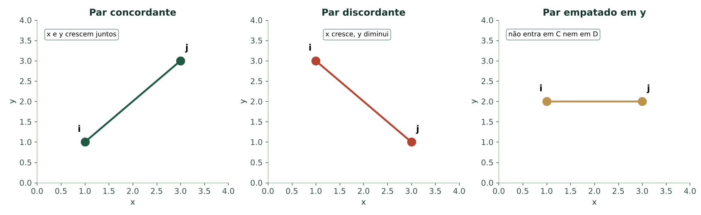
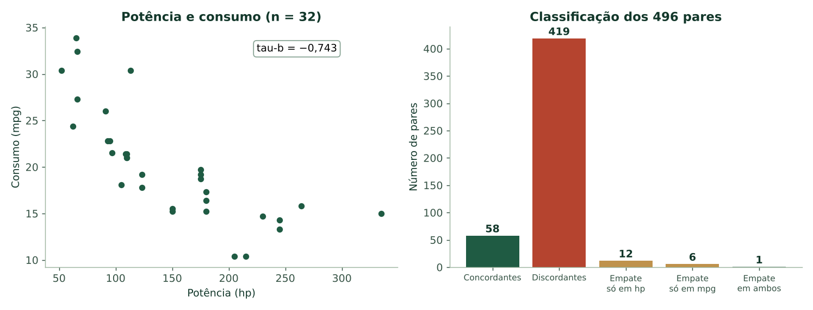

Correlação tau de Kendall
Avalia a concordância entre as ordenações de duas variáveis, comparando todos os pares de observações.
Comece por aqui
Escolha dois carros ao acaso. O mais potente é também o que gasta mais? O tau de Kendall responde contando: compara todos os pares possíveis de observações e verifica em quantos deles as duas variáveis apontam no mesmo sentido. É uma medida de associação com interpretação direta em termos de probabilidade.
O que é o coeficiente
Para cada par de observações \((i, j)\), olha-se o sentido da diferença em x e em y. Se os sentidos coincidem, o par é concordante; se são opostos, discordante; se há igualdade em alguma das variáveis, o par está empatado. O tau é a diferença entre a proporção de pares concordantes e a de discordantes.

Sem empates, \(\tau=P(\text{concordante})-P(\text{discordante})\). Um tau de 0,60 significa que um par sorteado ao acaso tem 80% de probabilidade de ser concordante e 20% de ser discordante.
Pressupostos e como verificá-los
| Pressuposto | Por que importa | Como verificar |
|---|---|---|
| Variáveis ao menos ordinais | É preciso comparar “maior” e “menor”. | Tipo de variável. |
| Pares independentes | Condição do teste de hipóteses. | Delineamento do estudo. |
| Relação monotônica | Relações em U produzem tau próximo de zero. | Gráfico de dispersão. |
| Empates | Definem qual versão usar: tau-b corrige empates. | anyDuplicated(x); o R calcula o tau-b automaticamente. |
| Normalidade | Não é exigida. | — |
Hipóteses e estatística de teste
Em que:
- \(C\)
- número de pares concordantes
- \(D\)
- número de pares discordantes
- \(T_x\)
- pares empatados somente em x
- \(T_y\)
- pares empatados somente em y
- \(n\)
- número de observações; há \(n(n-1)/2\) pares
- \(\tau_a\)
- versão sem correção para empates
- \(\tau_b\)
- versão com correção para empates (igual a \(\tau_a\) quando não há empates)
- \(z\)
- estatística com distribuição aproximadamente normal padrão sob \(H_0\); com empates, a variância recebe termos de correção
Exemplo numérico, passo a passo (n = 5, sem empates)
Valores de x: 1, 2, 3, 4, 5. Valores de y: 2, 1, 4, 3, 5. Há \(5\times4/2=10\) pares.
| Par (i, j) | y de i | y de j | Sentido em y | Tipo |
|---|---|---|---|---|
| (1, 2) | 2 | 1 | diminui | Discordante |
| (1, 3) | 2 | 4 | aumenta | Concordante |
| (1, 4) | 2 | 3 | aumenta | Concordante |
| (1, 5) | 2 | 5 | aumenta | Concordante |
| (2, 3) | 1 | 4 | aumenta | Concordante |
| (2, 4) | 1 | 3 | aumenta | Concordante |
| (2, 5) | 1 | 5 | aumenta | Concordante |
| (3, 4) | 4 | 3 | diminui | Discordante |
| (3, 5) | 4 | 5 | aumenta | Concordante |
| (4, 5) | 3 | 5 | aumenta | Concordante |
\(C=8\), \(D=2\) ⇒ \(\tau=\dfrac{8-2}{10}=0{,}60\).
Probabilidade de concordância: \(8/10=0{,}80\); de discordância: \(0{,}20\).
O valor-p exato, obtido pela distribuição de permutação, é 0,233: com cinco observações, não há evidência suficiente de associação.
Propriedades, valor-p e intervalo de confiança
- \(-1\leq\tau\leq1\); \(\tau=1\) quando todos os pares são concordantes.
- Não muda com transformações monotônicas crescentes de x ou de y.
- É resistente a valores extremos.
- Para os mesmos dados, \(|\tau|\) costuma ser menor que \(|r_s|\): as escalas não são comparáveis diretamente.
- Sem empates e com n pequeno, o valor-p é exato; caso contrário, usa-se a aproximação normal, que funciona bem já com amostras pequenas.
- O intervalo de confiança pode ser obtido por bootstrap ou por erro-padrão assintótico.
Como interpretar os resultados
| Resultado | Leitura |
|---|---|
| tau positivo | Predominam pares concordantes: as variáveis tendem a crescer juntas. |
| tau negativo | Predominam pares discordantes. |
| tau próximo de 0 | Concordantes e discordantes em proporções semelhantes. |
| p < 0,05 | Evidência de associação monotônica. |
Um tau de 0,50 indica associação mais forte do que um r de 0,50. Como referência aproximada, sob normalidade bivariada vale \(\tau=(2/\pi)\arcsin(\rho)\): \(\rho=0{,}50\) corresponde a \(\tau\approx0{,}33\), e \(\rho=0{,}80\) a \(\tau\approx0{,}59\).
Reporte qual versão foi usada (tau-b, em geral), n, o valor-p e um intervalo de confiança.
Como executar no R e em Python
Onde executar o código em Python
Não é preciso instalar nada: o Google Colab é um computador na nuvem, gratuito, que executa Python pelo navegador e já traz as bibliotecas usadas aqui (numpy, scipy e matplotlib).
cor() e cor.test() com method = "kendall" pertencem ao pacote stats, já instalado com o R, e calculam o tau-b. Havendo empates, use exact = FALSE.
cor(mtcars$hp, mtcars$mpg, method = "kendall")
cor.test(mtcars$hp, mtcars$mpg, method = "kendall", exact = FALSE)
Exemplo de aplicação
Contexto dos dados
Voltamos à potência (hp) e ao consumo (mpg) dos 32 automóveis do mtcars, os mesmos dados da ficha de Spearman, para comparar as duas medidas. Com 32 observações, há 496 pares.
Código em R
# Correlação tau de Kendall: exemplo completo ----
# Pacote: apenas o stats (já vem com o R). Dados: mtcars.
# 1. Dados: potência (hp) e consumo (mpg) de 32 automóveis
x <- mtcars$hp
y <- mtcars$mpg
n <- length(x)
# 2. Contagem dos pares concordantes, discordantes e empatados
pares <- combn(n, 2)
dx <- sign(x[pares[1, ]] - x[pares[2, ]])
dy <- sign(y[pares[1, ]] - y[pares[2, ]])
C <- sum(dx * dy > 0); D <- sum(dx * dy < 0)
Tx <- sum(dx == 0 & dy != 0); Ty <- sum(dy == 0 & dx != 0)
c(total = ncol(pares), concordantes = C, discordantes = D, empate_x = Tx, empate_y = Ty)
# 3. tau-a (ignora empates) e tau-b (corrige empates)
c(tau_a = (C - D) / ncol(pares),
tau_b = (C - D) / sqrt((C + D + Tx) * (C + D + Ty)))
# 4. Teste de hipóteses (o R calcula o tau-b)
cor.test(x, y, method = "kendall", exact = FALSE)
# 5. Comparação com Spearman e Pearson
c(spearman = cor(x, y, method = "spearman"), pearson = cor(x, y))
# 6. Intervalo de confiança de 95% por bootstrap (percentil)
set.seed(2026)
boot <- replicate(5000, { i <- sample(n, replace = TRUE)
cor(x[i], y[i], method = "kendall") })
quantile(boot, c(0.025, 0.975))
# 7. Gráfico de dispersão
plot(x, y, pch = 19, xlab = "Potência (hp)", ylab = "Consumo (mpg)")
A mesma análise em Python, com os resultados
Cole o código em um notebook do Google Colab ↗ e execute com Shift+Enter. Os valores abaixo são a saída desse código.
# Bibliotecas: numpy, scipy e matplotlib (já instaladas no Google Colab)
import numpy as np
from scipy import stats
import matplotlib.pyplot as plt
# Dados do conjunto mtcars: potência (hp) e consumo (mpg)
hp = np.array([110, 110, 93, 110, 175, 105, 245, 62, 95, 123, 123, 180, 180, 180, 205, 215, 230, 66, 52, 65, 97, 150, 150, 245, 175, 66, 91, 113, 264, 175, 335, 109])
mpg = np.array([21, 21, 22.8, 21.4, 18.7, 18.1, 14.3, 24.4, 22.8, 19.2, 17.8, 16.4, 17.3, 15.2, 10.4, 10.4, 14.7, 32.4, 30.4, 33.9, 21.5, 15.5, 15.2, 13.3, 19.2, 27.3, 26, 30.4, 15.8, 19.7, 15, 21.4])
n = len(hp)
def pares(x, y):
"""Conta pares concordantes, discordantes e empatados."""
C = D = Tx = Ty = Txy = 0
for i in range(len(x)):
for j in range(i + 1, len(x)):
dx, dy = np.sign(x[i] - x[j]), np.sign(y[i] - y[j])
if dx == 0 and dy == 0: Txy += 1
elif dx == 0: Tx += 1
elif dy == 0: Ty += 1
elif dx == dy: C += 1
else: D += 1
return C, D, Tx, Ty, Txy
# 1. Contagem dos pares
C, D, Tx, Ty, Txy = pares(hp, mpg)
total = n * (n - 1) // 2
print(f"Pares: total = {total} | concordantes = {C} | discordantes = {D} | empates só em hp = {Tx} | só em mpg = {Ty} | em ambos = {Txy}")
# 2. tau-a (ignora empates) e tau-b (corrige empates)
tau_a = (C - D) / total
tau_b_manual = (C - D) / np.sqrt((C + D + Tx) * (C + D + Ty))
print(f"tau-a = {tau_a:.5f} | tau-b (manual) = {tau_b_manual:.5f}")
# 3. Teste de hipóteses (tau-b, aproximação normal com correção de empates)
res = stats.kendalltau(hp, mpg)
print(f"tau-b = {res.statistic:.5f}, z = {stats.norm.isf(res.pvalue / 2) * np.sign(res.statistic):.4f}, p-valor = {res.pvalue:.3e}")
# 4. Comparação com Spearman e Pearson
print(f"Spearman = {stats.spearmanr(hp, mpg)[0]:.5f} | Pearson = {stats.pearsonr(hp, mpg).statistic:.5f}")
# 5. Intervalo de confiança de 95% por bootstrap (percentil)
rng = np.random.default_rng(2026)
boot = []
for _ in range(5000):
i = rng.integers(0, n, n)
boot.append(stats.kendalltau(hp[i], mpg[i]).statistic)
print("IC 95% bootstrap:", np.round(np.percentile(boot, [2.5, 97.5]), 4))
# 6. Exemplo do texto (n = 5, sem empates)
x = np.array([1, 2, 3, 4, 5]); y = np.array([2, 1, 4, 3, 5])
C5, D5, *_ = pares(x, y)
r5 = stats.kendalltau(x, y)
print(f"\nn = 5: C = {C5}, D = {D5}, tau = {r5.statistic:.2f}, p-valor exato = {r5.pvalue:.4f}")
# 7. Gráfico de dispersão
plt.scatter(hp, mpg); plt.xlabel("Potência (hp)"); plt.ylabel("Consumo (mpg)"); plt.show()
Resultados da execução
Pares: total = 496 | concordantes = 58 | discordantes = 419 | empates só em hp = 12 | só em mpg = 6 | em ambos = 1 tau-a = -0.72782 | tau-b (manual) = -0.74281 tau-b = -0.74281, z = -5.8710, p-valor = 4.332e-09 Spearman = -0.89466 | Pearson = -0.77617 IC 95% bootstrap: [-0.859 -0.6173] n = 5: C = 8, D = 2, tau = 0.60, p-valor exato = 0.2333

| Elemento | Valor | Leitura |
|---|---|---|
| Pares concordantes / discordantes | 58 / 419 | Predomínio amplo de discordantes. |
| Empates (só hp / só mpg / ambos) | 12 / 6 / 1 | Justificam o uso do tau-b. |
| tau-a | −0,728 | (58 − 419) / 496. |
| tau-b | −0,743 | (58 − 419) / √(489 × 483). |
| z | −5,871 | Valor-p = 4,3 × 10⁻⁹. |
| IC 95% (bootstrap percentil) | [−0,859; −0,617] | 5000 reamostras; varia levemente conforme a semente. |
| Spearman / Pearson | −0,895 / −0,776 | Escalas diferentes: não compare os valores diretamente. |
Leitura: entre os pares sem empate, 419 de 477 (88%) são discordantes: ao comparar dois carros, o mais potente é quase sempre o que percorre menos milhas por galão. A variância de \(C-D\), já com a correção de empates, é 3780,85 (seria 3802,67 sem empates), e \(z=-361/\sqrt{3780{,}85}=-5{,}871\). A conclusão coincide com a de Spearman; o que muda é a escala e a interpretação.
Erros comuns
| Erro | Como evitar |
|---|---|
| Comparar tau com r ou r_s como se fossem a mesma escala | Tau é sistematicamente menor em valor absoluto. |
| Usar tau-a com muitos empates | Use tau-b (ou tau-c em tabelas retangulares). |
| Aplicar a relações não monotônicas | Verifique o gráfico de dispersão. |
| Pedir valor-p exato com empates | Use a aproximação normal (exact = FALSE). |
| Inferir causalidade | Vale a mesma cautela das demais correlações. |
Alternativas e fluxo de trabalho
| Procedimento | Quando preferir |
|---|---|
| Spearman | Amostras maiores; tradição da área; cálculo mais rápido. |
| Pearson | Relação linear e interesse na reta. |
| Tau-c de Stuart | Tabelas de contingência ordinais com números diferentes de linhas e colunas. |
| Gama de Goodman–Kruskal | Variáveis ordinais com muitos empates (ignora os pares empatados). |
| W de Kendall | Concordância entre três ou mais avaliadores. |
- Faça o diagrama de dispersão.
- Verifique a monotonicidade e a presença de empates.
- Calcule o tau-b com o teste.
- Reporte com intervalo de confiança e interprete em termos de pares.
Referências desta ficha
- KENDALL, Maurice G. A new measure of rank correlation. Biometrika, v. 30, n. 1-2, p. 81-93, 1938.
- KENDALL, Maurice G. The treatment of ties in ranking problems. Biometrika, v. 33, n. 3, p. 239-251, 1945.
- HOLLANDER, Myles; WOLFE, Douglas A.; CHICKEN, Eric. Nonparametric statistical methods. 3. ed. Hoboken: Wiley, 2014.
- AGRESTI, Alan. Analysis of ordinal categorical data. 2. ed. Hoboken: Wiley, 2010.
- EFRON, Bradley; TIBSHIRANI, Robert J. An introduction to the bootstrap. New York: Chapman & Hall, 1993.
- HENDERSON, Harold V.; VELLEMAN, Paul F. Building multiple regression models interactively. Biometrics, v. 37, n. 2, p. 391-411, 1981. (Conjunto de dados
mtcars, pacotedatasetsdo R.) - R CORE TEAM. R: a language and environment for statistical computing. Vienna: R Foundation for Statistical Computing, 2026. Disponível em: https://www.r-project.org/. (Funções
corecor.test, pacotestats.) - POSIT TEAM. RStudio: integrated development environment for R. Boston: Posit Software, PBC. Disponível em: https://posit.co/download/rstudio-desktop/.
- VIRTANEN, Pauli et al. SciPy 1.0: fundamental algorithms for scientific computing in Python. Nature Methods, v. 17, p. 261-272, 2020. DOI: 10.1038/s41592-019-0686-2. (Funções do módulo
scipy.stats.) - HARRIS, Charles R. et al. Array programming with NumPy. Nature, v. 585, p. 357-362, 2020. DOI: 10.1038/s41586-020-2649-2.
- HUNTER, John D. Matplotlib: a 2D graphics environment. Computing in Science & Engineering, v. 9, n. 3, p. 90-95, 2007.
- GOOGLE. Google Colaboratory. Disponível em: https://colab.research.google.com/.
- As figuras desta ficha foram elaboradas pelo autor.

Prof. Dr. Cássius Henrique Xavier Oliveira
Professor · ICTIN/UFLA · Estatística, Confiabilidade e Ciência de Dados.
Conheça minha trajetória e projetos →